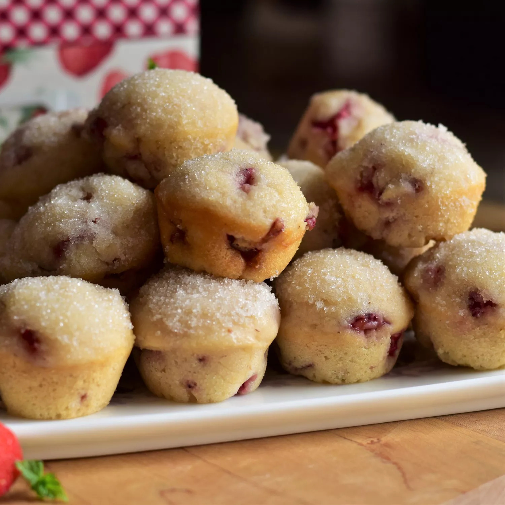

Strawberry Donut Mini Muffins

Description
If you like strawberries and donuts, then this recipe is for you!
These easy-to-make mini muffins are a great anytime treat!
Ingredients
Muffins:
- 2 cups all-purpose flour
- ½ cup sugar
- ½ teaspoon baking powder
- ½ teaspoon baking soda
- ½ teaspoon salt
- ¼ teaspoon ground nutmeg
- 1 cup buttermilk, at room temperature
- ¼ cup butter, melted and cooled
- 1 large egg, lightly beaten
- 1 ½ teaspoons vanilla extract
- 1 cup finely chopped fresh strawberries
Topping:
- ¼ cup butter
- ½ cup white sugar, or as needed